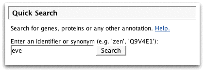
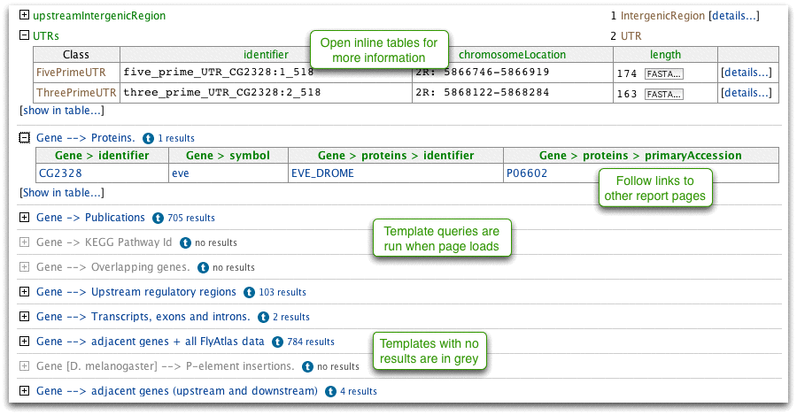

A quick search box appears on the front page and in the menu bar of all pages. You can search for any identifier or symbol for genes, proteins, transcripts and so on. You can use '*' as a wildcard.
Run a quick search for the Drosophila gene 'eve'.

The report page shows information from many data sources in one place. There are corresponding pages for all objects in FlyMine, use ![[details...]](details.png) links to browse.
links to browse.
Template queries are run for this gene when the page is loaded. We can add templates to this page at any time - it only takes a few minutes - so if you have a suggestion, let us know.
